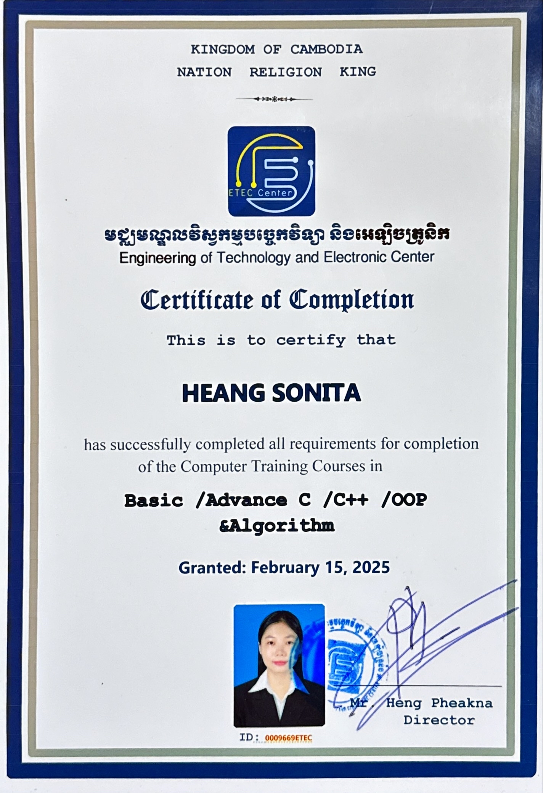

Computer Training Courses — C / C++ / OOP & Algorithms
badgeSuccessfully completed intensive academic and practical requirements covering Basic and Advanced C, C++, Object-Oriented Programming (OOP), and core algorithm design. Built a strong foundation in software architecture, data structures, and algorithmic problem-solving.